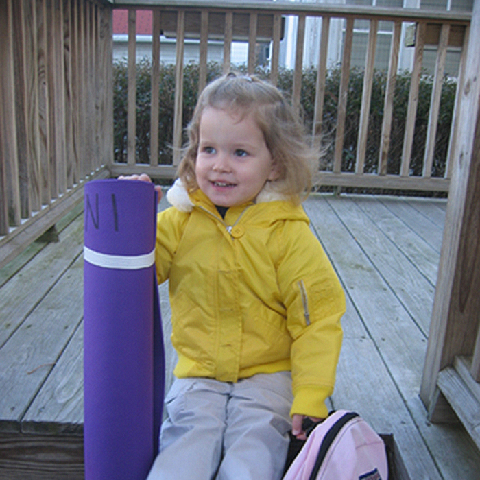
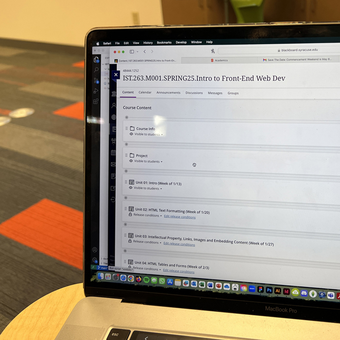
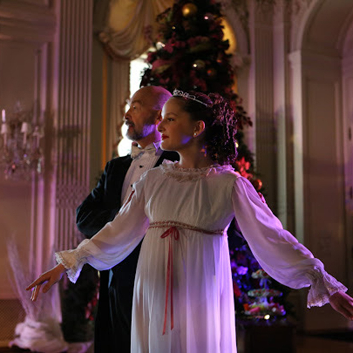

Eleni Cooper
Something personal is that I chose yellow as my favorite color at age three and have stuck to my guns ever since. Professionally, I am currently the TA for one of the IST 263 sections after taking it last semester. Something peculiar is that I performed the Nutcracker in a mansion for ten years growing up!


